Chapter 3 Introduction to financial time series
3.1 Background
Financial prices, indices, returns etc. are sequences of real numbers indexed by time. The study of their mathematical and statistical properties is vital for those aspiring to write papers in empirical finance.
For example, consider the following plot of a hypothetical market index: what can we say about the market conditions from its ups and downs?
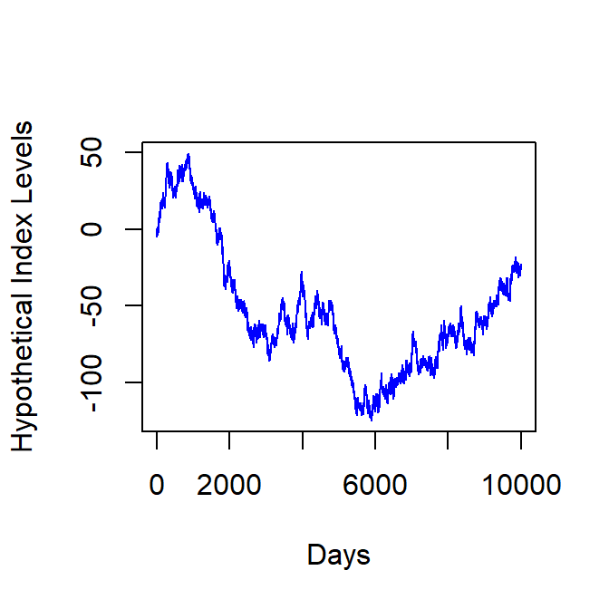
The above series is, however generated via the command: plot(cumsum(rnorm(10000, 0, 1)) which plots the cumulative sum of ten thousand standard normal realizations—a random walk!
The random walk hypothesis is a theory that claims that stock market prices obey a random walk process. This hypothesis is consistent with the “Efficient Market Hypothesis.” Roughly speaking, the efficient market hypothesis claims in its weak form that for publicly traded stocks, all public information is captured in the price of the stock. The strong form of the hypothesis claims that all information—both public and private—is reflected the stock price. Hence according to this theory, any attempt to consistently beat the market in terms of risk-adjusted returns is doomed to failure.1
Hence in particular, any attempt to discern patterns in the hypothetical market’s ups and downs as shown above is worthless.
Do empirical financial markets behave in the same way too?
3.2 Empirical Financial Time Series
As an illustration we produce the daily time series for the closing value of the Bombay Stock Exchange index (“Sensex”).
file_bse <- "SENSEX.csv"
index_bse <- readr::read_csv(file_bse) %>%
dplyr::select(-empty)
index_bse$Date <- as.Date(index_bse$Date,
format = "%d-%B-%Y"
) #date reformat
plot(index_bse$Date,
index_bse$Close,
type = "l",
col = "blue",
xlab = "Year",
ylab = "BSE Index",
main = "Indian stock market performance"
)
fit_lm <- lm(Close ~ Date,
data = index_bse) #fit linear model
abline(fit_lm, #plot linear model line
lty = "dotdash",
col = "red",
lwd = 2
)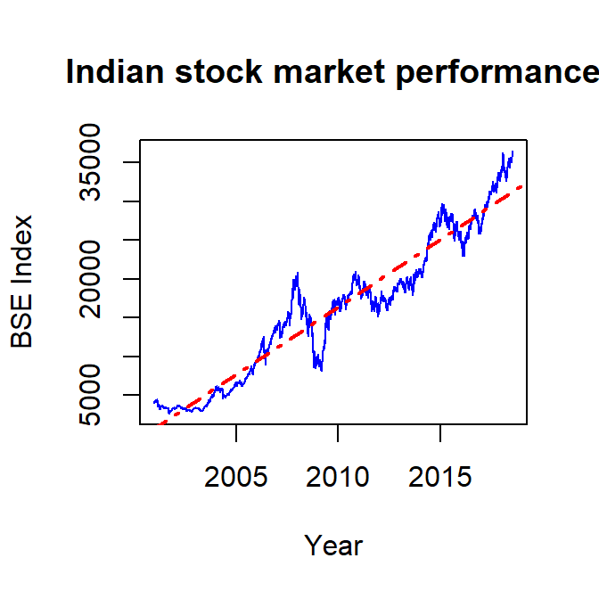
# via ggplot
ggplot(data = index_bse,
aes(Date, Close)
) +
geom_line(lwd = 0.3,
color = "blue"
) +
geom_smooth(method = "lm",
lty = "dotdash",
lwd = 0.6,
color = "red",
se = F) +
theme_minimal() +
labs(x = "Years",
y = "BSE Sensex",
title = "Indian stock market performance"
)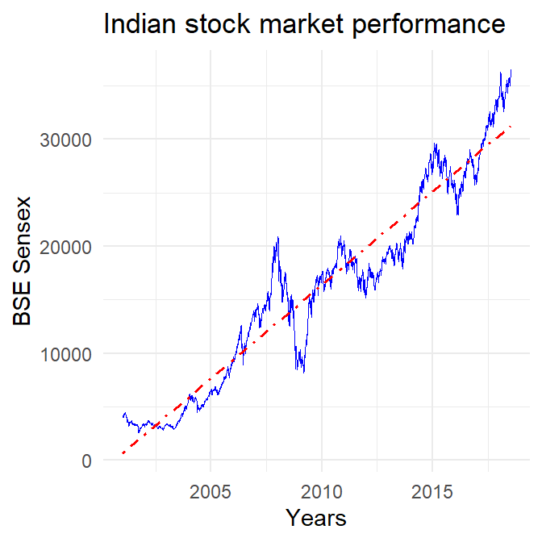
It seems that the level of the series is rising and the fluctuations are sometimes high and sometimes low.
This index series is an example of a non-stationary time series. This roughly means that the mean and the variance of such a series are functions of time.
Here is the index level time series for the US index S&P500 from 2008:
file_sp500 <- "SP500.csv" #S&P 500
ind_sp500 <- readr::read_csv(file_sp500,
col_types = cols(DATE = col_date(),
SP500 = col_double()
),
na = c("", "NA", ".")
)
ggplot(ind_sp500,
aes(DATE, SP500)
) +
geom_line(lwd = 0.3,
color = "blue") +
geom_smooth(method = "lm",
lty = "dotdash",
lwd = 0.6,
se = F,
color = "red"
) +
theme_minimal() +
labs(x = "Years",
y = "S&P500"
)## Warning: Removed 92 rows containing non-finite values (stat_smooth).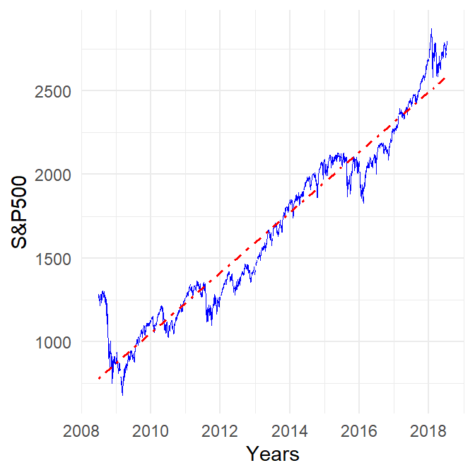
And here it for the Japanese Nikkei225:
file_nikkei <- "NIKKEI225.csv" #Nikkei 225
ind_nikkei <- readr::read_csv(file_nikkei,
col_types = cols(DATE = col_date(),
NIKKEI225 = col_double()
),
na = c("", "NA", ".")
)
ggplot(ind_nikkei,
aes(DATE, NIKKEI225)
) +
geom_line(lwd = 0.3,
color = "blue") +
geom_smooth(method = "lm",
lty = "dotdash",
lwd = 0.6,
se = F,
color = "red"
) +
theme_minimal() +
labs(x = "Years",
y = "Nikkei225"
)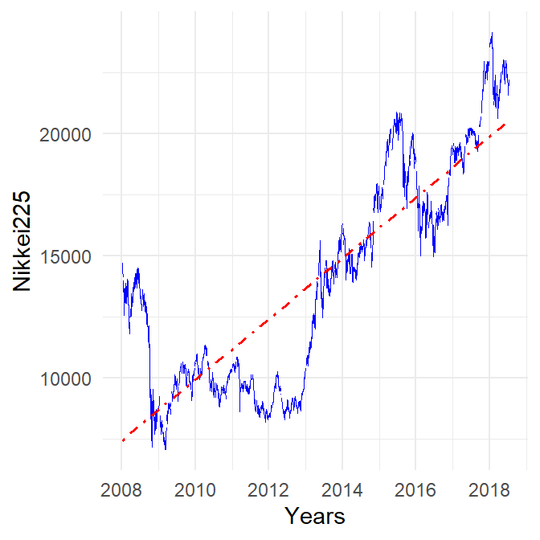
3.3 Returns
We observe prices in the financial markets empirically. However, due to their non-stationary nature, they are hard to analyze. Hence they are converted to return series which are usually stationary. There are many ways to construct different notions of returns from the same underlying price sequence. We discuss some prominent ones below.
3.3.1 One-Period Simple Return
The simple one period return for holding some asset whose price is given by the sequence \(\{p_t\}_{t=1}^n\) is:
\[r_t := \frac{p_t-p_{t-1}}{p_{t-1}} = \frac{p_t}{p_{t-1}}-1\]
3.4 Multi-period Simple Return
\[r_t[k] := \frac{p_t-p_{t-k}}{p_{t-k}} = \frac{p_t}{p_{t-k}}-1\] \[r_t[k] := \frac{p_t}{p_{t-k}}-1 = \frac{p_t}{p_{t-1}}\frac{p_{t-1}}{p_{t-2}}\hdots\frac{p_{t-k+1}}{p_{t-k}}-1\] \[r_t[k] := (1+r_t)(1+r_{t-1})\hdots(1+r_{t-k+1})-1\]
Multi-period returns are used to convert high frequency returns to low frequency returns—i.e., daily to monthly; or monthly to yearly etc.
For example to convert monthly returns to annual returns: \[r_{t}[12]= [\prod_{j=0}^{12-1}(1+r_{t-j})]^{1/12}-1\]
Often (when working with daily returns especially) \(1+r_t\approx r_t\), in which case: \[r_t[k]\approx \sum_{j=0}^{k-1}r_{t-j}\]
Additionally, the simple returns for a portfolio with fractional weights \(w_1,\hdots,w_n\) are: \[r_{p,t}=\sum_{i=1}^n w_ir_{i,t}\]
3.4.1 Log Returns
We know that to compute yearly returns from say, monthly returns we use the following formula: \[r_{t}[12]= [\prod_{j=0}^{12-1}(1+r_{t-j})]^{1/12}-1\]
In general, if a bank pays an annual interest of \(r^m_t\) \(m\) times a year, the interest rate for unit investment is \(r^m_t/m\) and after one year the value of the deposit is \((1+\frac{r_t^m}{m})^m\). If there is continous compounding, \(m\to \infty\), in which case the value of the investment becomes:
\[\lim\limits_{m\to \infty}(1+\frac{r_t^m}{m})^m = e^{r_t}\]
Hence it must be that: \[R_t = \log p_t-\log p_{t-1} = \log\frac{p_t}{p_{t-1}}\]
A particular advantage of log-returns are that multiperiod log returns are merely the sum of one period log returns:
\[R_t[k]=\log p_t - \log p_{t-k}=\log p_t - \log p_{t-1} + \log p_{t-1} -\hdots \log p_{t-k}\] \[R_t[k]= R_t[1]+R_t[2]+\hdots+R_t[k-1]\]
3.5 Computational Examples
To construct return series from prices, we write a function that accepts as input a price (or index) sequence and returns a sequence of simple one period returns by using the formula \(r_t = \frac{p_t-p_{t-1}}{p_{t-1}}\). Since there is no return for the first entry of the price sequence, we append an NA at the beginning of the returns.
func_pr_to_ret <- function(price_vec)
{
# This function takes a vector of prices and
# returns a vector of simple one period returns
l <- length(price_vec)
ret_num <- diff(price_vec) #numerator = change in prices
ret_den <- price_vec[-l] #denominator = price series
return(c(NA, ret_num/ret_den)) #first return is NA
}
price_vec_1 <- seq(from = 1, to = 10, by = 2)
func_pr_to_ret(price_vec_1)## [1] NA 2.0000000 0.6666667 0.4000000 0.2857143Similarly log-returns can be calculated using the formuala \(R_t = \log(p_t)-\log(p_{t-1})\).
func_pr_to_logret <- function(p_vec)
{
# This function takes a vector of prices and
# returns a vector of log returns
log_price <- log(p_vec)
log_ret <- diff(log_price) #log ret = delta log p
return(c(NA, log_ret)) #first return is NA
}
p_vec <- seq(from = 1, to = 10, by = 2)
func_pr_to_logret(p_vec)## [1] NA 1.0986123 0.5108256 0.3364722 0.25131443.6 Return Series for Market Indices
We can compute returns and log-returns for the Bombay Stock Exchange Index, S&P500 and the Nikkei 225 as follows:
ret_BSE <- func_pr_to_ret(index_bse$Close)
plot(index_bse$Date, #x variable
ret_BSE, #y variable
type = "l",
lwd = 1.2,
col = "blue",
xlab = "Years",
ylab = "BSE Returns"
)
abline(h = 0)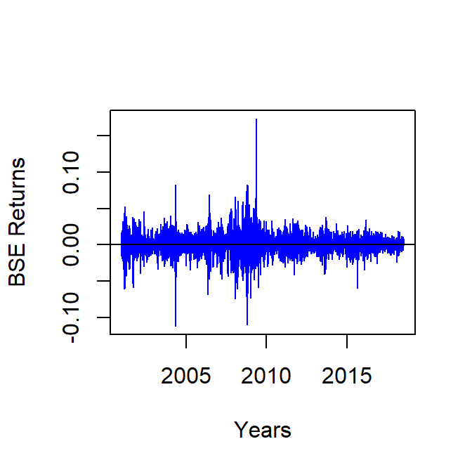
We can do the same for the S&P500 and the Nikkei225 series:
ret_sp500 <- func_pr_to_ret(ind_sp500$SP500)
plot(ind_sp500$DATE, #x variable
ret_sp500, #y variable
type = "l",
lwd = 1.2,
col = "red",
xlab = "Years",
ylab = "S&P500 Returns"
)
abline(h = 0)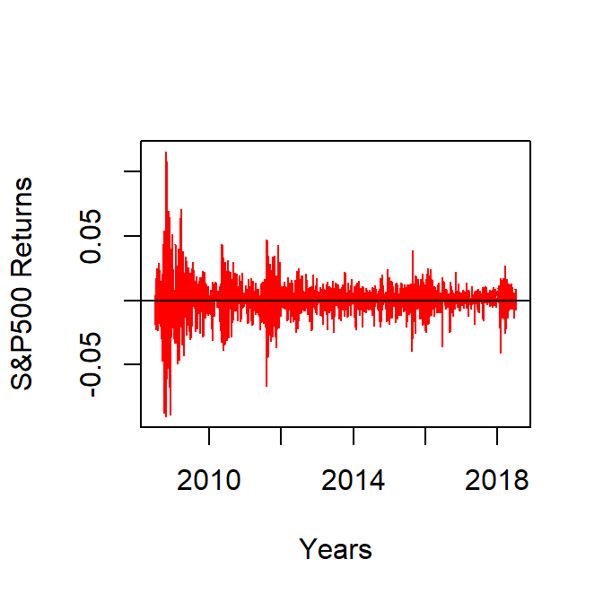
ret_nikkei <- func_pr_to_ret(ind_nikkei$NIKKEI225)
plot(ind_nikkei$DATE, #x variable
ret_nikkei, #y variable
type = "l",
lwd = 1.2,
col = "green",
xlab = "Years",
ylab = "Nikkei225 Returns"
)
abline(h = 0)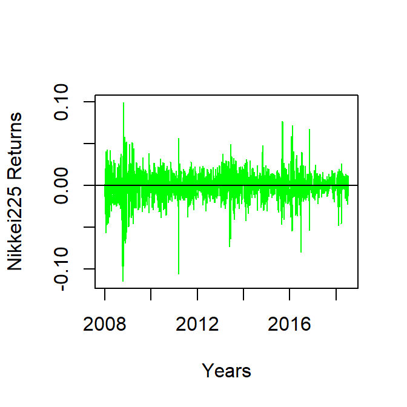
One clearly sees that the index sequences have no trend now. It seems that the returns are fluctuating around a mean level 0. The fluctuations (volatility) around the mean are sometimes high and sometimes low.
3.7 Stationarity of Time Series
There’s a clear difference between the plots of prices (or indices like the BSE); and the returns derived from them. Indices keep increasing with time, suggesting some type of a trend and tend to fluctuate more or less around the trend line. Returns, on the other hand seem to have no trend.
3.7.1 Stationarity
A (strictly) stationary process is one for which the unconditional joint distribution does not change with time: \[F_X(x_1,\hdots,x_t)=F_X(x_{1+\delta},\hdots,x_{t+\delta})\]
where \(F_X(\cdot)\) is the distribution for the process \(X_t\) and \(\delta>0\).
In particular this implies that the mean and the variance (and other central moments) do not change with time.
Inference for nonstationary series is difficult. Hence in practice we convert nonstationary processes to stationary processes before analyzing them.
A weakly stationary time series is such that the mean of the process \(\mathbb{E}(X_t) = \mu(t) = \mu\) and its (auto)covariance \(\text{covar}(X_t, X_{t-\delta}) = \sigma_{\delta}\) depends only on the lag \(\delta\).
Strictly stationary series are weakly stationary but not vice versa.
3.7.2 Trend Stationarity
If the trend (mean) of the nonstationary process is deterministic, we have trend stationarity: \[X_t = \mu(t) + \epsilon_t\]
where \(\mu(\cdot)\) is a real function and \(\epsilon_t\) is stationary process (say, \(\mathcal{N}(0,1)\)).
Here is an illustration—suppose the mean is \(\mu(t) = 1 + 2t\):
t <- seq(0, 100, 0.4)
plot((1 + 2*t + rnorm(length(t), 0, 10)),
type = "l",
lwd = 2,
col = "green",
xlab = "index",
main = "Trend stationary seris"
)
lines((1+2*t),
type = "l",
col = "red",
lty = "dotdash",
lwd = 1.2
)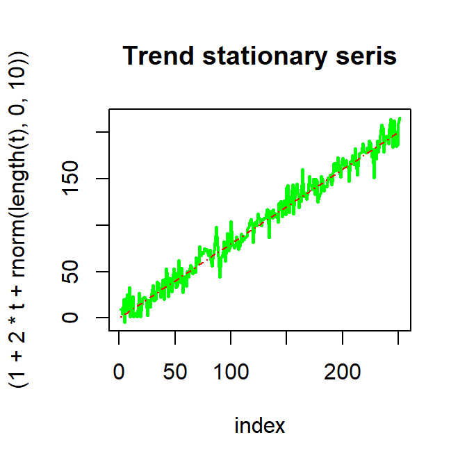
This can be made into a stationary process by detrending: subtracting \(\mu(t) = 1+2t\) from the series, to recover \(X_t-\mu(t)=\epsilon_t\sim \mathcal{N}(0, 10)\) in this case:
plot((1 + 2*t + rnorm(length(t), 0, 10) - (1 + 2*t)),
type = "l",
main = "Detrended series",
col = "green"
)
abline(h = 0)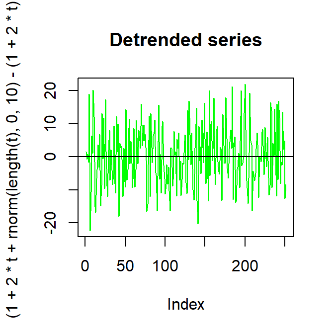
Additionally trend stationary series are mean-reverting which means that after encountering an exogenous shock they tend to revert to the fluctuations-around-the-mean behavior.
3.7.3 Unit Roots
A stochastic process has a unit root if 1 is the root of its characteristic equation. For example consider the following process:
\[X_t = X_{t-1} + \epsilon_t\]
It’s characteristic equation is: \(x - 1 = 0\). It’s clear that \(X_t - X_{t-1} = \epsilon_t\) is a stationary process.
Note that for trend stationary series we detrended to obtain a stationary series while for a unit root process, we first-differenced to arrive at a stationary series. Random walks are examples of unit root processes.
By repeated additions:
\[X_T = X_0 + \sum_{t = 1}^T \epsilon_t\]
Hence \(\mathbb{E}(X_T) = X_0 + \mathbb{E}(\epsilon_T) = X_0\); and \(\text{var}(X_T) = \text{var}(\sum_{t = 1}^T \epsilon_t) = T\cdot \sigma^2\).
plot(cumsum(rnorm(1000, 0, 10)),
type = "l",
lwd = 1.5,
col = "red",
main = "Unit root process"
)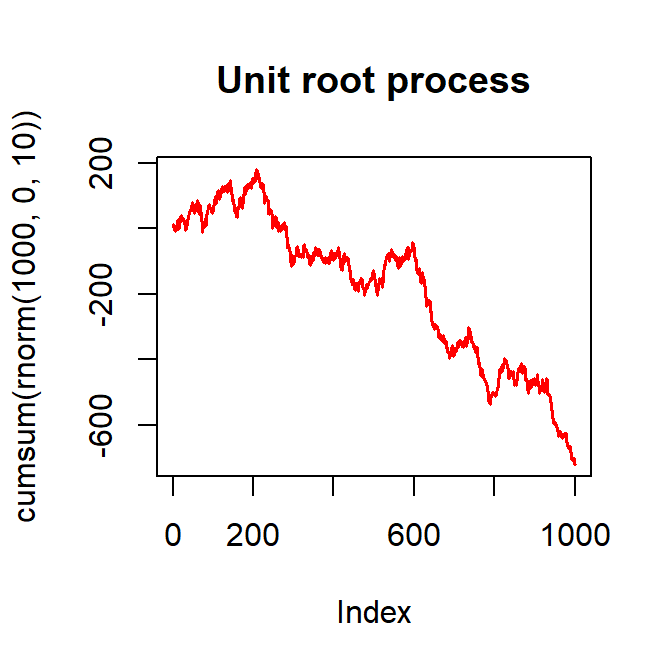
plot(rnorm(1000, 0, 10),
type = "l",
col = "blue",
main = "Differenced unit root process"
)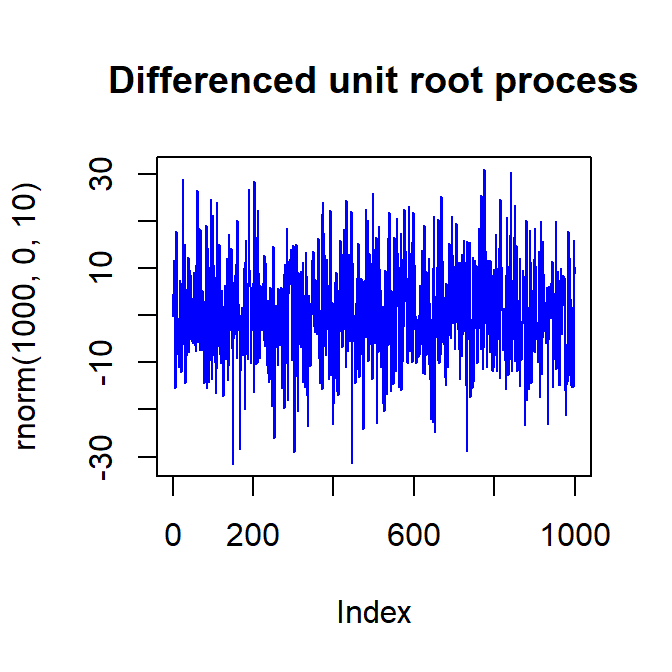
Unit root processes are not mean reverting—an exogenous shock can permanently alter the behavior of the unit root process.
3.8 Distribution of Returns
Are all return values for the indices considered above equally likely to occur? If that is the case, the returns will be uniformly distributed. A quick glance at the figures however suggests that perhaps some other distribution ought to be considered.
3.8.1 Summary Statistics of Empirical Returns
For the three indices and their return series considered above (the BSE Sensex, the S&P500, the Nikkei225) we compute summary statistics below:
func_summ_stat_ind <- function(vec)
{
summ_stat_ind <- data.frame(min = min(vec, na.rm = T),
max = max(vec, na.rm = T),
mean = mean(vec, na.rm = T),
median = median(vec, na.rm =T),
std = sd(vec, na.rm =T),
iqr = IQR(vec, na.rm=T),
var = var(vec, na.rm =T)
) %>%
signif(., digits = 2) #significant digits = 2
return(summ_stat_ind)
}
table_summ_stat <- rbind(c("BSE", func_summ_stat_ind(ret_BSE)),
c("S&P500", func_summ_stat_ind(ret_sp500)),
c("Nikkei225", func_summ_stat_ind(ret_nikkei))
)
knitr::kable(table_summ_stat)| min | max | mean | median | std | iqr | var | |
|---|---|---|---|---|---|---|---|
| BSE | -0.11 | 0.17 | 0.00061 | 0.00092 | 0.014 | 0.014 | 2e-04 |
| S&P500 | -0.09 | 0.12 | 0.00038 | 0.00061 | 0.013 | 0.0093 | 0.00016 |
| Nikkei225 | -0.11 | 0.1 | 0.00014 | 0.00059 | 0.016 | 0.015 | 0.00024 |
For all series, the medians are about 1.5–3 times the corresponding means. This suggests that there are significant negative outliers.
In general though, a natural choice for modeling return distribution is the ubiquitous normal distribution. To check if it is a plausible candidate, we plot the empirical histogram of returns for all three series separately.
3.8.2 Histograms for returns for each index
hist(ret_BSE,
breaks = 80,
col = "grey",
xlab = "Daily Returns",
ylab = "Frequency",
main = "Histogram for BSE"
)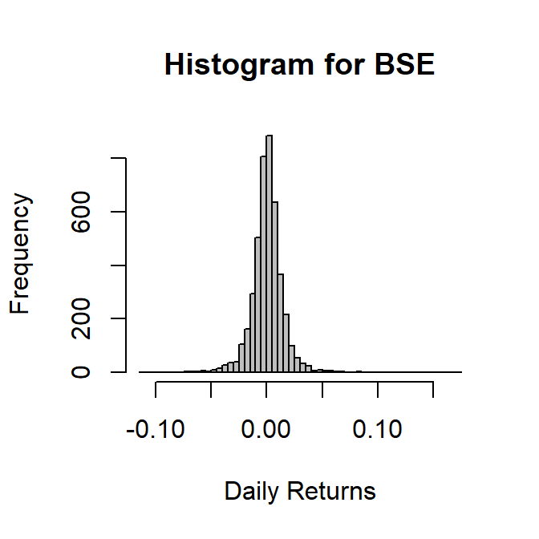
hist(ret_sp500,
breaks = 80,
col = "grey",
xlab = "Daily Returns",
ylab = "Frequency",
main = "Histogram for S&P500"
)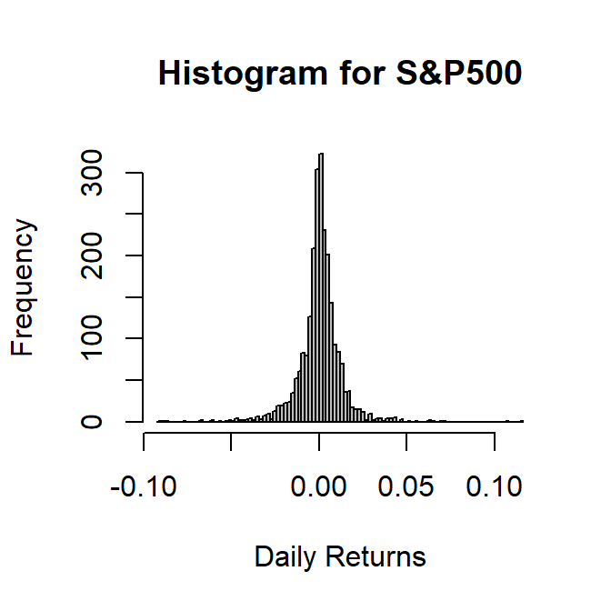
hist(ret_nikkei,
breaks = 80,
col = "grey",
xlab = "Daily Returns",
ylab = "Frequency",
main = "Histogram for Nikkei225"
)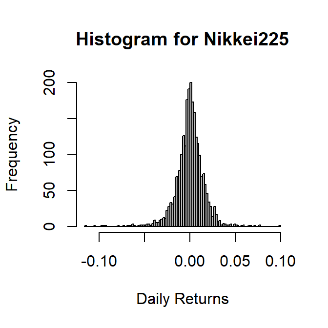
The three histograms do resemble a normal density. All of them display the classic bell curve characteristics. However, merely eyeballing the data is not proof enough.
3.8.3 Skewness and Kurtosis
One way to test if the data are normally distributed is to check their third and fourth central moments—the skewness and kurtosis. For normal random variables, the skewness must be 0 (the bell curve is unimodal and symmetric about its mean); and the kurtosis must be 3. If the data display substantial departures from such values there may be evidence of non-normality.
Formally the skewness and kurtosis are defined as:
\[s = \mathbb{E}(\frac{X-\mu}{\sigma})^3\] \[\kappa = \mathbb{E}(\frac{X-\mu}{\sigma})^4\]
We compute the skewness and kurtosis of the return series for the three indices as follows:
skew <- rbind(moments::skewness(ret_BSE, na.rm = T),
moments::skewness(ret_sp500, na.rm = T),
moments::skewness(ret_nikkei, na.rm = T)
)
kurt <- rbind(moments::kurtosis(ret_BSE, na.rm = T),
moments::kurtosis(ret_sp500, na.rm = T),
moments::kurtosis(ret_nikkei, na.rm = T)
)
table_skew_kurt <- data.frame(Skew = skew,
Kurt = kurt,
Excess_Kurt = kurt-3
)
knitr::kable(table_skew_kurt)| Skew | Kurt | Excess_Kurt |
|---|---|---|
| 0.0967129 | 12.870632 | 9.870632 |
| -0.0938530 | 15.121463 | 12.121463 |
| -0.6276185 | 9.691047 | 6.691047 |
There is substantial evidence from the table above to suggest that the returns may be non-normal. Formally however, we resort the Jarque-Bera Test to confirm our hypothesis.
3.8.4 The Jarque-Bera Test for Normality
There is a large literature that suggests two empirical regularities for asset returns:
- Crashes occur more frequently than booms
- Extreme events occur more frequently than suggested by normal distributions
The first outcome is consistent with a distribution displaying negative skewness. The second outcome suggests excess kurtosis.
The Jarcque-Bera test is a moment based test that relis on the observation that for a normal random variable the skewness and excess kurtosis are both 0. The estimators for skewness and kurtosis are: \[\hat{s} = \frac{1}{T}\sum_{t=1}^T (\frac{x_t-\bar{x}}{\hat{\sigma}})^3\] \[\hat{\kappa} = \frac{1}{T}\sum_{t=1}^T (\frac{x_t-\bar{x}}{\hat{\sigma}})^4\]
and as \(T\to \infty\)
\[\sqrt T\cdot \hat{s} \to \mathcal{N}(0, 6)\] \[\sqrt T\cdot (\hat{\kappa}-3) \to \mathcal{N}(0, 24)\]
Hence, for normal random variables
\[\frac{\hat{s}}{\sqrt(\frac{6}{T})}\to \mathcal{N}(0,1)\] \[\frac{\hat{\kappa}-3}{\sqrt(\frac{24}{T})}\to \mathcal{N}(0,1)\]
The Jarque-Bera test statistic uses the following insight:
\[JB = T[\frac{\hat{s}^2}{6}+\frac{\hat{\kappa}-3}{24}]\to \chi^2(2)\]
In order to test if the returns from the three indices do follow the normal distribution we employ the package tseries and the function jarque.bera.test() in it. Note that it disallows any NA values.
tseries::jarque.bera.test(rnorm(1000, 0, 10)) #benchmarking##
## Jarque Bera Test
##
## data: rnorm(1000, 0, 10)
## X-squared = 0.71894, df = 2, p-value = 0.698tseries::jarque.bera.test(!is.na(ret_BSE)) #note: !is.na()##
## Jarque Bera Test
##
## data: !is.na(ret_BSE)
## X-squared = 3465305843, df = 2, p-value < 2.2e-16tseries::jarque.bera.test(!is.na(ret_sp500))##
## Jarque Bera Test
##
## data: !is.na(ret_sp500)
## X-squared = 14394, df = 2, p-value < 2.2e-16tseries::jarque.bera.test(!is.na(ret_nikkei))##
## Jarque Bera Test
##
## data: !is.na(ret_nikkei)
## X-squared = 5265.2, df = 2, p-value < 2.2e-163.9 Stylized Facts
Stock prices, commodity prices, exchange rates etc. in empirical financial markets display many striking regularities discussed in (Cont:2001?).
- Fat Tails: Unconditional return distributions have tails fatter than those of normal distribution. Conditional return distributions are also non-normal.
- Asymmetry: Unconditional return distributions are negatively skewed.
- Aggregated Normality: Lower frequency returns resemble normal distributions more than higher frequency returns.
- No Autocorrelation: Except at high frequencies, returns generally do not display autocorrelation.
- Volatility Clustering: Return volatility is autocorrelated.
- Time-Varying Cross Correlation: Correlation between assets returns tends to be higher during high volatility periods especially during market crashes.
3.10 References
Or, in other words, if investors beat the market it’s not perhaps due to their so-called investing skills but due to their being lucky.↩︎